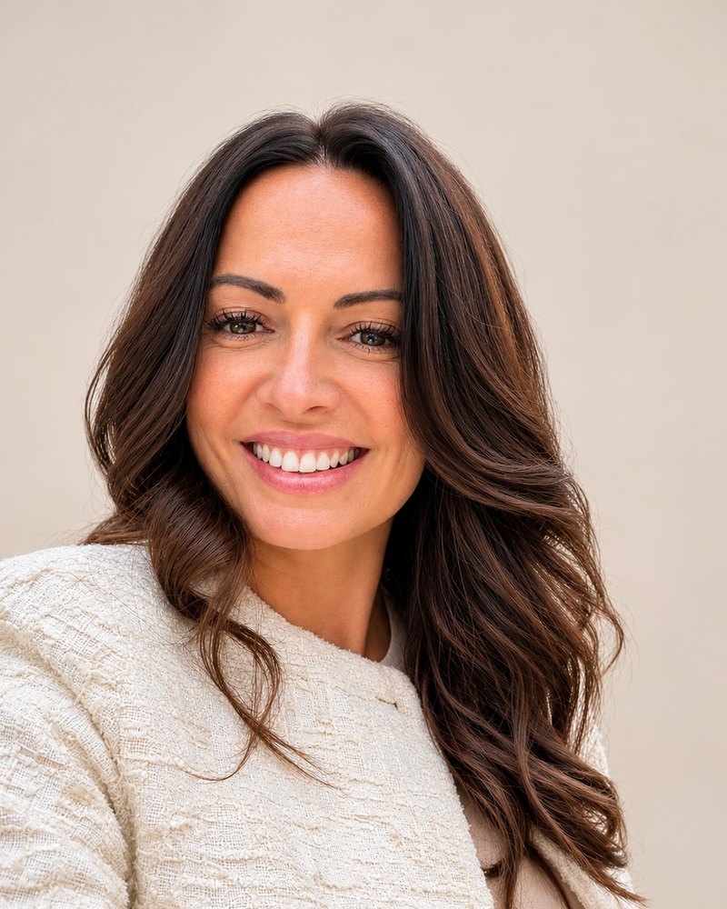

Tér a gondolatoknak, figyelem a kapcsolódásnak.
Online coaching felnőtteknek, pároknak, kamaszoknak és neurodivergens kamaszoknak, valamint team coaching pedagógusoknak. A saját tempódban, önreflexióval és kapcsolódással.
Miért Kapcsolódás Coaching?
Mert minden mindennel összefügg.
Ahogyan önmagunkhoz viszonyulunk, ahogyan másokhoz kapcsolódunk, és ahogyan a mindennapi helyzeteinkben működünk. Ezek hatással vannak egymásra, sokszor anélkül, hogy ezt észrevennénk.
Hiszek abban, hogy a változás egyik első lépése a felismerés. Amikor elkezdünk ránézni arra, hogyan működünk, mi foglalkoztat bennünket, mire van szükségünk, és milyen erőforrásokra támaszkodhatunk.
Szülőként pontosan tudom, hogy a gyermekünkkel való kapcsolatunk folyamatosan alakul. Vannak időszakok, amikor könnyen értjük egymást, máskor nehezebben találjuk a közös hangot. Különösen igaz ez a kamaszkorra, amikor a fiatalok egyszerre keresik önmagukat, a helyüket a világban, és közben egyre nagyobb önállóságra vágynak.
Ilyenkor szülőként sem mindig egyszerű megtalálni az egyensúlyt. Hogyan támogassuk őket úgy, hogy közben teret adjunk a saját döntéseiknek? Hogyan legyünk jelen anélkül, hogy mindenre mi szeretnénk megoldást találni?
A coaching számomra éppen erről is szól. Nem kész válaszokat adunk, hanem közösen keressük azokat a lehetőségeket, amelyek valóban a másik emberhez illeszkednek.
A kamaszokkal való munkában különösen fontosnak tartom, hogy a fiatal megtapasztalhassa: kíváncsiak vagyunk rá, meghallgatjuk, és elfogadjuk őt a saját működésével együtt. Nem az a cél, hogy valaki mássá váljon, hanem hogy jobban megismerje önmagát, felismerje az erősségeit, és egyre magabiztosabban tudjon jelen lenni a kapcsolataiban.
Felnőttként is kerülhetünk olyan élethelyzetekbe, amikor elakadunk, bizonytalanok vagyunk, vagy egyszerűen szeretnénk valamin változtatni. Ilyenkor sokat jelenthet egy olyan beszélgetés, amelyben lehetőségünk van megállni, más nézőpontból ránézni a helyzetünkre, és megtalálni a saját válaszainkat.
Számomra a kapcsolódás mindenekelőtt figyelmet, kíváncsiságot és elfogadást jelent.
Kapcsolódást önmagunkhoz, a gyermekeinkhez, a körülöttünk élőkhöz.
Mert hiszem, hogy amikor jobban megértjük önmagunkat és egymást, új lehetőségek is megnyílhatnak előttünk.
És néha már egy jó kérdés is elég ahhoz, hogy valami elinduljon.
Miben tudok segíteni
-
Life coaching
Elakadtál egy élethelyzetben, döntés előtt állsz, vagy egyszerűen szeretnéd jobban érteni, mi történik veled. Az ülésen te hozod a témát, én kérdezek, segítek az önreflexióban, és rendezem a gondolataidat, hogy lépésekké alakulhassanak.
-
Párkapcsolati coaching
Közös asztalnál, hármasban dolgozunk: kiteszünk mindent az asztalra, és könnyed beszélgetés közben hidat építünk kettőtök között. Ez nem párterápia.
-
Coaching kamaszoknak és neurodivergens kamaszoknak
Kamaszoknak, köztük ADHD-s, autizmus spektrumon lévő vagy más módon neurodivergens kamaszoknak, és a szüleiknek, akik biztonságos, ítélkezésmentes teret szeretnének számukra.
-
Team coaching óvoda- és általános iskolai pedagógusoknak
Óvodapedagógusok és általános iskolai pedagógusok csapatainak: közös gondolkodás, önreflexió és kapcsolódás a kollégák, a gyerekek és a szülők felé.
Neked szólhat, ha…
- döntés előtt állsz, és szeretnéd nyugodtan átgondolni a lehetőségeidet.
- úgy érzed, elakadtál egy élethelyzetben, és nem látod, mi lehet a következő lépés.
- változtatni szeretnél valamin, de nem tudod, hol kezdd.
- jobban szeretnéd érteni, hogyan működsz, és mi fontos neked.
- a párkapcsolatotokban nehéz egymásra hangolódni, vagy ugyanarról beszélni.
- a kamaszodhoz nehezebben találod a közös hangot, vagy kamaszként szeretnél egy biztonságos teret, ahol meghallgatnak.
- pedagógus csapatként közös gondolkodásra és kapcsolódásra van szükségetek.
Ha nem vagy biztos benne, hogy a coaching jó irány-e, az ingyenes ismerkedő beszélgetésen közösen átgondoljuk. Nincs elköteleződés.
Így zajlik a folyamat
-
Ingyenes ismerkedő beszélgetés
30 perc, online. Megbeszéljük, mi a témád, és hogy a coaching ehhez jó eszköz-e. Nincs elköteleződés.
-
Közös keretek
Ha folytatni szeretnéd, megegyezünk az ülések gyakoriságában, időtartamában és a közös munka céljában.
-
Ülések
60 perces online ülések Google Meeten. Minden alkalommal az aktuális témáddal dolgozunk, a te tempódban.
-
Lezárás
A folyamat akkor ér véget, amikor úgy érzed, elérted, amiért jöttél. A lezárásról együtt döntünk.
Rólam

Gyenese-Kenyeres Rózsa vagyok, diplomás coach. Life és párkapcsolati coachként dolgozom, neurodivergens kamaszokkal, valamint óvodapedagógusokból és általános iskolai pedagógusokból álló csapatokkal is.
Azóta dolgozom emberekkel, amióta a Szegedi Tudományegyetemen megszereztem a diplomámat. Televíziós műsorkészítéssel kezdtem, a háttérben dolgoztam többek között az RTL Klub Nyerő Páros című műsorán. A jelöltekkel, később a szereplőkkel is őszintén tudtam beszélni, és a forgatások alatt sok élethelyzet és konfliktus megoldásában segítettem egyeztetések facilitálásával.
Ez indított el a coaching felé. A másoddiplomámat a Budapesti Metropolitan Egyetemen (METU) szereztem, a diplomamunkám neurodivergens kamaszok coachingjáról szólt. Felkérést kaptam, hogy cikket írjak a Magyar Coachszemle magazinba.
A legfontosabb kapcsolódásnak magaddal kell kialakulnia. Ha te rendben vagy, minden rendben van.
A coaching nem terápia és nem pszichológiai kezelés. Ha ilyen jellegű segítségre van szükséged, szívesen segítek megtalálni a megfelelő szakembert.
Mit mondanak rólam
A coachingnak köszönhetően mindenben fejlődtem, amiért korábban segítséget kértem Rózsától! Szuper beszélgetéseink vannak! Imádom! Hálás vagyok, hogy megismertem Rózsát! Amellett, hogy kiváló szakember, egy nagyon értékes nő!
Élmény Vele minden beszélgetés, nagyon könnyű megtalálni a közös hangot és feloldódni! Szívből ajánlom Rózsát! 🥰
Kezdjük egy beszélgetéssel
Az ismerkedő beszélgetés ingyenes. Válassz egy neked megfelelő időpontot.